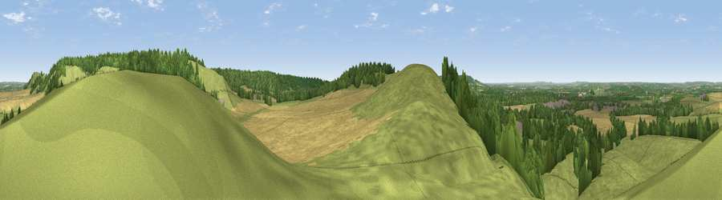

Paul’s Knob
#14172 in England · top 12% of its area beats it · near IvinghoeThe view, rendered

A 360° render of this exact spot computed from the terrain model, tree cover and land cover — summer colours, afternoon light, calibrated against photographs of famous viewpoints. Real trees, hedges and buildings will differ in detail.
The panorama
Grey silhouette: terrain skyline in each direction (720 bearings, Earth curvature and refraction included). Dashed green: skyline with trees (+15 m) and buildings (+8 m) as obstacles. Blue strip: how far the ground is visible on each bearing.
Where the view opens
Wedge length = distance to the farthest visible ground on that bearing (vegetation-aware). Rings at 10, 25 and 50 km.
What fills the view
52% grassland · 27% cropland · 18% woodland · 2% built-up · 1% bare ground
Angular shares of the visible panorama (visual magnitude), not map area. Landscape diversity 0.49 (0–1 Shannon).
Key numbers
More beautiful places nearby
The staircase of upgrades: each row has a higher view potential than everything closer. Driving times are estimates from straight-line distance, calibrated against real road routing — check an actual route before setting out.
| Place | Direction | Drive | Score |
|---|---|---|---|
| Viewpoint near Tring Station | SSW · 1 km | ~2 min | 68.5 |
| Beacon Hill | NNE · 2 km | ~6 min | 74.1 |
| Viewpoint near Halton | SW · 8 km | ~16 min | 74.3 |
| Coombe Hill Monument | SW · 13 km | ~24 min | 75.5 |
| Viewpoint near Woolstone | WSW · 71 km | ~95 min | 76.7 |
| Viewpoint near Meon Vale | WNW · 83 km | ~108 min | 77.0 |
| Broadway Hill | WNW · 86 km | ~111 min | 77.7 |
| Cleeve Hill | W · 97 km | ~122 min | 79.8 |
51.82392, -0.61828 · source: osm peak · position refined by local search. Computed location — check access rights before visiting.